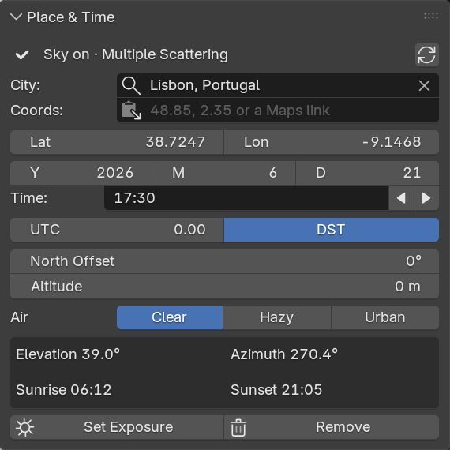

Sunreckon quick start
Installing Sunreckon, your first sky, a day animation, clouds and HDRIs. Back to the Sunreckon product page.
Install (Blender 4.2 LTS to 5.2 LTS)
- After checkout, download
sunreckon-1.2.2.zipfrom the link in Polar's email. Install the zip itself; do not unzip it first. - In Blender, open Edit > Preferences > Get Extensions.
- Blender may first ask about internet access, with Continue Offline and Allow Online Access. Sunreckon needs no internet, so Continue Offline is fine.
- After Continue Offline, Blender may show a yellow Repository Alert saying the extensions.blender.org data is unavailable. That is Blender's own notice about its online catalogue, not an install error. Carry on with the next step.
- Open the drop-down menu (⌄) at the top right, choose Install from Disk... and pick the zip. Dragging the zip onto the Blender window also works. Sunreckon is enabled at once.
- Press N in the 3D Viewport and open the Sunreckon tab.
To update, install the newer zip the same way; your .blend files keep their settings. To remove Sunreckon, first click Remove (in Place & Time) in any file you want back as it was, then go to Preferences > Add-ons, find Sunreckon, and choose Uninstall from its drop-down menu. Without Remove, the World, the Sun light and the clouds stay in the file as ordinary Blender data and keep rendering.
Your first sky
- Pick the place. A new file starts in Paris. In Place & Time, click City and start typing; pick from the list of 1,251 cities (Enter picks the first). The city sets latitude, longitude, its UTC offset and daylight saving for the date. Or paste into Coords: "48.8566, 2.3522", degrees-minutes-seconds such as 48°51'24"N 2°21'08"E, or a Google Maps or OpenStreetMap link. A paste also sets an estimated clock (from the nearest listed city, or the longitude) and says so: check it near a zone border.
- Set the date and the local clock time. Y, M and D are the date. Type the time the way you write it: 10:30, 16:45 or 4:45 pm. The arrows beside it move it by 15 minutes.
- If +Y is not north in your scene, set North Offset: the angle from the scene's +Y axis to true north, clockwise seen from above. If north is 30° to the left of +Y in the Top view (anticlockwise), type −30; if it is 30° to the right, type 30.
- Click Add Sky. The status bar says, for example, "Sky added: sun 64.5° up at 184°, exposure -4.5." The button's place now holds one status row.
- Switch the viewport to Rendered shading (Z, then Rendered) to see the sky. Until you do, the status row reads "Sky on · see it in Rendered (Z)"; after, "Sky on · Multiple Scattering" (Nishita on 4.2 to 4.5).

The box under the Air buttons shows the sun's elevation and azimuth and that day's sunrise and sunset. If the sun is down at your time it says so ("Sun below the horizon at 18:30"), and the viewport is dark. Set Exposure puts the exposure back to -4.5 if you changed it. For golden-hour shots, with the sun below about 15°, raise the exposure about a stop.
Animate a day
- In the Sun section, From and To follow that day's sunrise + 20 minutes and sunset − 20 minutes while Follow sunrise and sunset is ticked. Typing your own times unticks it; tick it to go back. Key Every sets the frames between keys; the scene's frame range is used.
- Click Animate Day. The status bar says how many keys it wrote.
- Play or scrub the timeline. The box in Place & Time now shows the current frame's clock and sun ("Frame 1 · 06:30"), and the greyed Time field shows the same frame's time: the timeline drives the sun. Change the place, date, air, clouds or strength and the keys are rewritten. The X removes them.
Clouds
- In Clouds, pick Few, Scattered, Broken or Overcast, then Fast or Volumetric. Coverage, Cloud Base (m), Wind From (°) and Wind Speed (m/s) can be changed after.
- Fast clouds cast no shadows; Volumetric ones do. Scattered, Broken and Overcast dim the Sun light (to 85%, 45% and 12%).
- If the cloud shadows miss your shot, click Shadow in View: it moves the clouds so that the edge of a cloud's shadow falls where the camera looks. The panel then says how far ("Moved 21 m by Shadow in View"); its X puts the clouds back. Pattern picks another arrangement of clouds.
- Leave Performance Mode on: with Volumetric clouds the viewport shows the Fast cloud layer and the cloud shadows, and F12 renders the quality you chose. Before you send a Cycles file to a render farm that does not have Sunreckon, turn it off.
- The line under Render cost vs clear sky gives the chosen preset's cost, for example "EEVEE ×1.9 · Cycles ×4.6"; open it for every preset.

Use an HDRI
- In HDRI, pick a Folder with your .hdr or .exr files (optional: Blender's own world HDRIs are always listed). Rescan (the arrows) looks again.
- Click the small square beside "Pick an HDRI" and pick one from the grid. It goes on the World at your scene's own exposure, and the status bar says so. Adjust Strength and Rotation. While an HDRI is on the World, Clouds and the day animation are greyed: they belong to the sky.
- Align Sun to HDRI points the Sun light at the map's brightest point and matches its strength and colour, and takes the map's sun out of the light the World casts, so the sun lights the scene once, with its shadow; the camera still sees the map unchanged.
- Back to Sky brings the sky back with every setting it had, its exposure included. Both buttons say "Pick an HDRI first" until an HDRI is on the World.

The panel images come from a scene with Rain Rig (CC) Blender Foundation | studio.blender.org, used under CC BY 4.0. Rain is not included with Sunreckon.
Undo it all
Remove (in Place & Time) deletes the Sunreckon World, Sun light, clouds and keys, and restores the exposure from before Add Sky. It puts the previous World back only if the scene still shows the Sunreckon sky, and leaves anything another scene uses in place; the status bar says what it kept.
Limits
- Blender 4.2 LTS to 5.2 LTS, EEVEE and Cycles. Tested on official Linux builds; Windows and macOS not tested yet.
- Blender's sky is black below the horizon: a finite floor shows a black band between its edge and the horizon. Extend the ground or frame it out.
- No night sky, stars, moon, planets, aurora, fog, rain or snow, and no clouds the camera can enter.
- EEVEE's cloud shadows cover 2.4 km around the camera and fade out at the edge. Their outline is crisp in the viewport (Performance Mode) and soft in renders. In EEVEE, Volumetric clouds take 1.8 to 2.8 times as long to render as a clear sky on our machine without a graphics card.
- Daylight-saving dates follow each zone's 2026 rules; historical offsets are not modelled. A pasted place's clock is an estimate.
- Align Sun to HDRI needs about 0.6 GB extra memory for an 8k map and 2.2 GB for a 16k map. The HDRI list shows files directly in the chosen folder, not in subfolders.
Privacy
Sunreckon makes no network connections and sends nothing anywhere. It reads only the HDRI folder you pick and the HDRIs that ship with Blender.
Support
Email support@ochrestack.com with your Blender version, your operating system and what you did. Updates are free for the life of the product.